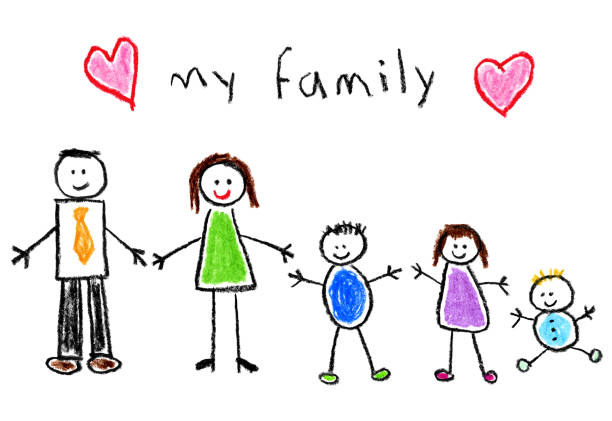

Job
His first job was through a youth cooperative where he worked in warehouses as a manual worker. He then worked part-time as an interviewer in various companies such as Kleffman Group, Strategic Marketing, CESID, where he surveyed residents on the topics of agriculture in the villages around Čačak, questions about the use of alcoholic beverages, listening to the radio, whether companies use loans And which loans, then in the Marten Board on the use of anal or digital media and the like. Then he took a break by staying in the countryside, where his father comes from, where he worked on the mountain in Zlatibor, picking raspberries. Then he worked as a manual laborer in the Gornja Trepča spa, building footpaths and maintaining healing water sources. There he worked on public works for four months. Then he worked in the Health Clinic, where he entered into the computer the types of diseases for which patients came to the doctor to be treated, and filled out the prescriptions written by the doctor, stamped them, and issued the prescriptions. There, he also worked in the file cabinet, where he neatly placed and used the patients' health records. After that, he worked for the next nine years as a computer operator at the Center for Independent Living of Persons with Disabilities in Čačak, and there he worked on creating databases in the Excel program, where there was information about what people with disabilities do, what their wishes are, how society treats them, who helps them and what assistants are like, who are with people with disabilities. In the meantime, he completed the Business Plan preparation training at the Republic Agency for Small and Medium Enterprises and Entrepreneurship. There, he participated in a business plan competition with the idea of founding a company that would deliver cooked food to households at home. He is now unemployed, but is a job seeker. It is very difficult to find a job in a smaller city, unlike in Belgrade. Belgrade offers more opportunities, but he respects his parents and helps them, and is with them. Of those who studied at different faculties, and with whom he became friends, they stayed in Belgrade or went abroad in search of new opportunities. It is nice to live in Serbia. It is not easy, but it seems to be easy in other countries of Europe and the world. Running there, with the possibility of getting a job and starting a family, he doesn't think is an option for him. It's nice to see Europe, visit a city, see cultural and historical objects, even doing business abroad, is a challenge, but also an additional motivation. There is an opportunity to work even online, which creates an additional relief and advantage for doing work with decent earnings. All in all he is a fighter and he will find everything necessary for a normal life and a job he loves and he will be happy just like everyone around him, be it family or friends.
